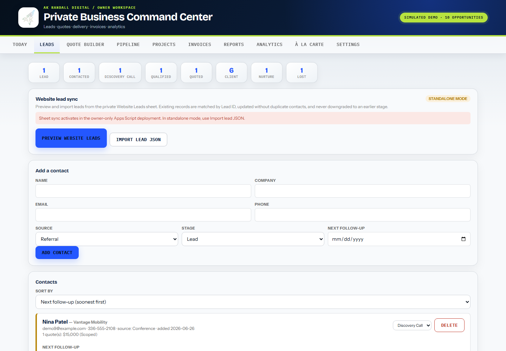
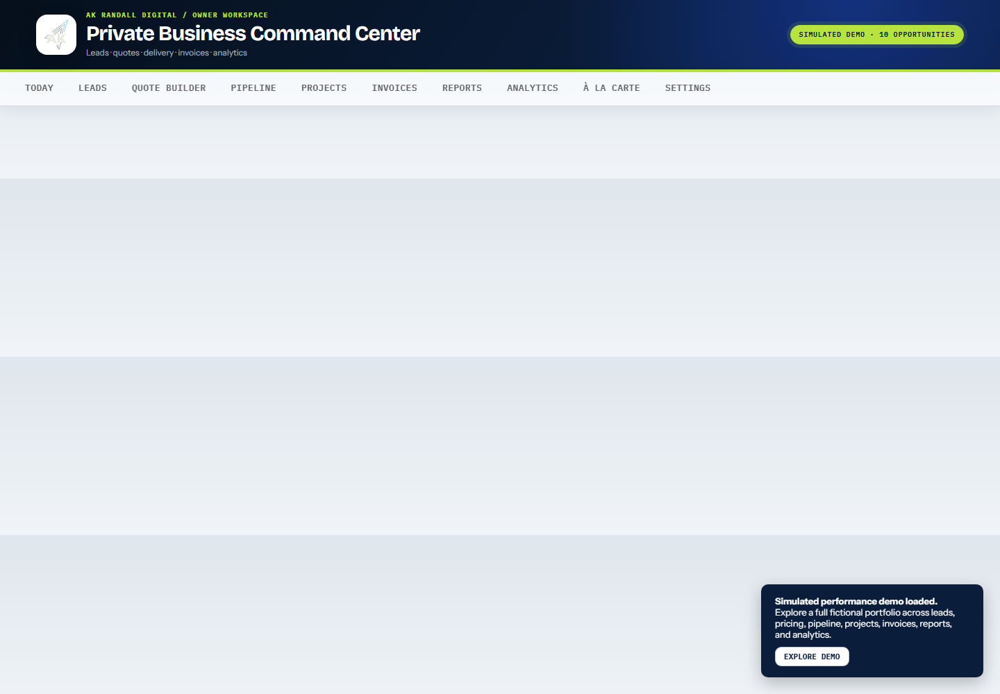
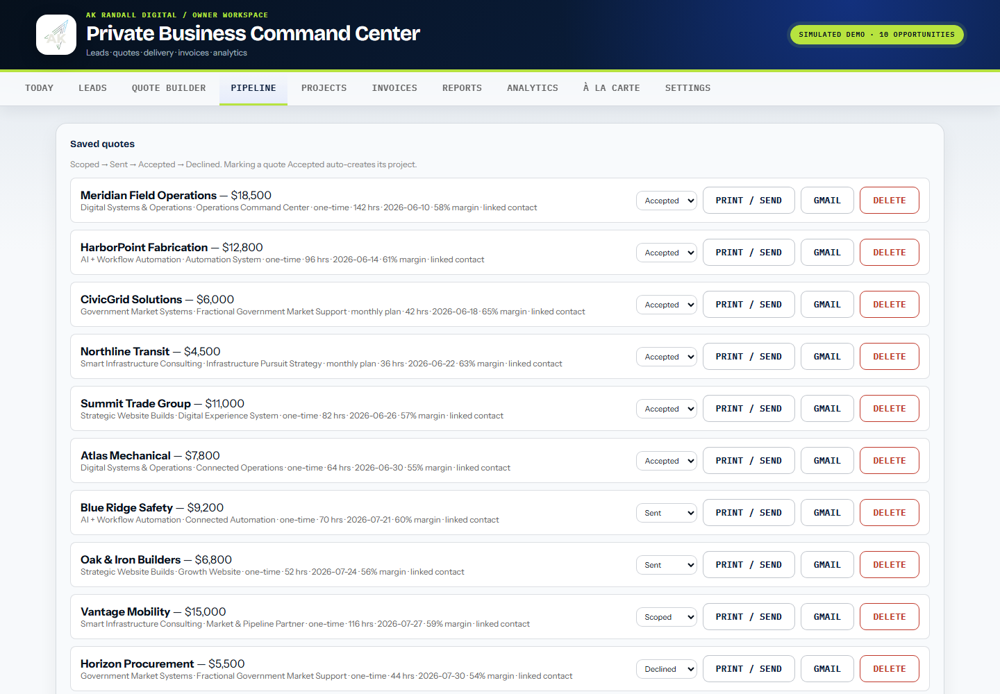
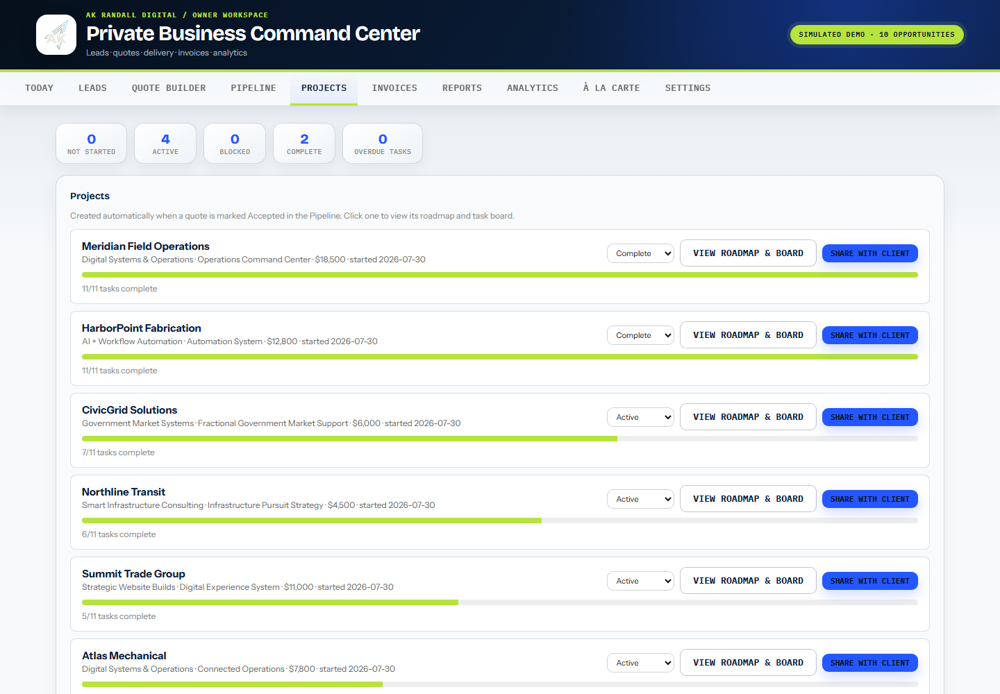
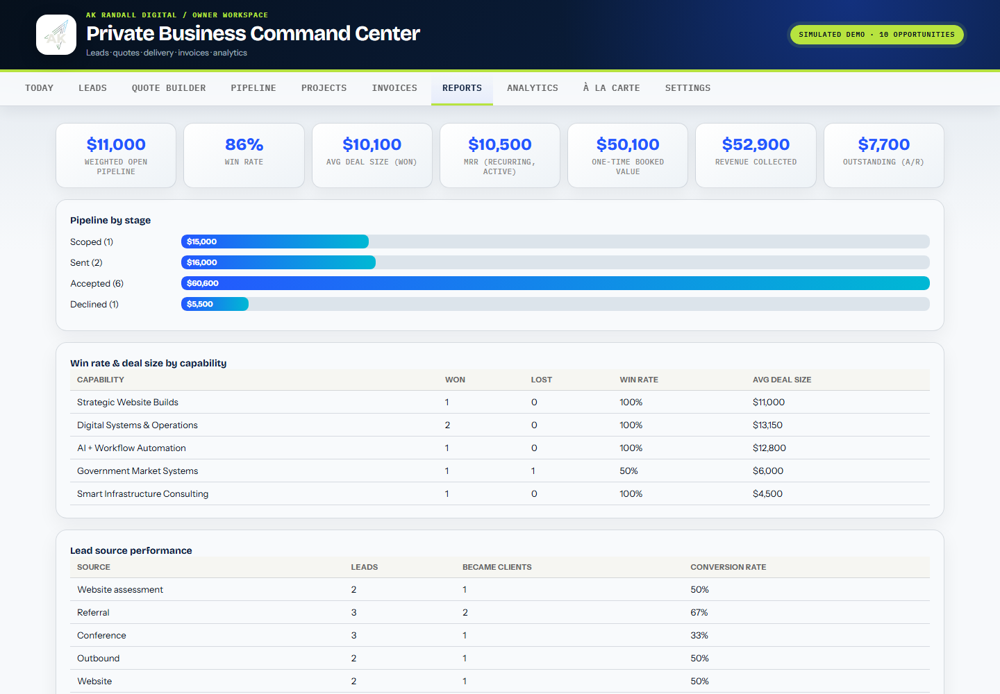
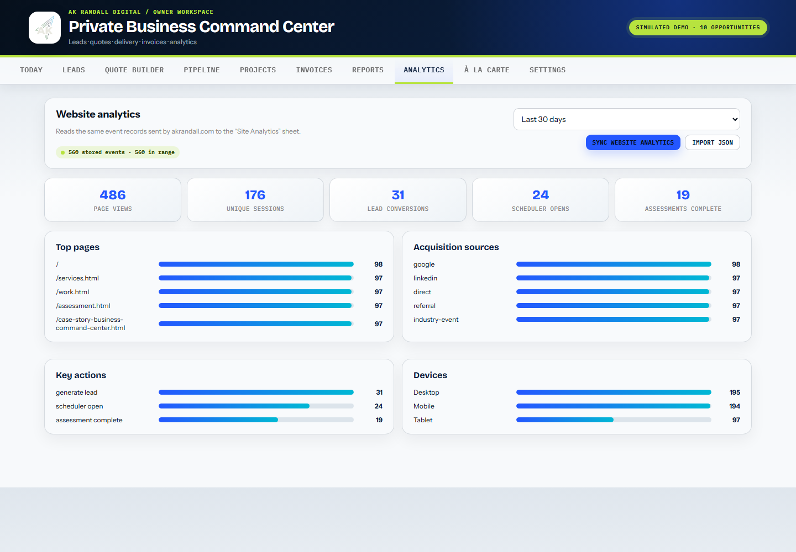

Simulated booked value across six accepted engagements
Internal operating-system build / AK Randall Digital
From scattered business activity to one command center.
Website leads, assessments, pricing, proposals, projects, invoices, and reporting were each useful. The real risk lived between them. This system was built to make every handoff visible, owned, and easier to act on.
Working product architecture · Simulated portfolio clearly labeled · Replaceable with your live operating data

- Capture
- Qualify
- Price
- Deliver
- Learn
Simulated monthly recurring revenue in active delivery
Simulated win rate across decided opportunities
Simulated 28-day website sessions feeding the system
Demonstration scenario: every company, contact, opportunity, transaction, and performance metric above is fictional. The scenario is intentionally strong so buyers can inspect how the system communicates a healthy operation—not as a claim about AKRD or any client.
See the system move
The interface is the visible part. The operating logic is the proof.
The film follows a clearly labeled, high-performing simulated business from daily priorities through lead handling, pricing, pipeline, delivery, invoicing, reporting, and analytics.
The real problem
Useful tools can still create a broken operating path.
A form can capture a lead. A sheet can store it. A pricing tool can calculate a quote. A calendar can hold the next meeting. None of those pieces guarantees that context survives the handoff.
The cost of a disconnected system is rarely one dramatic failure. It is the accumulation of small delays, repeated entry, missing context, and decisions made from partial information.
The connected operating path
Build around the decisions the business has to make next.
The system does not replace judgment. It gives judgment a reliable sequence, clearer context, and fewer places to disappear.
- 01 / CAPTURE
Bring the signal in
Website leads and assessment context can enter the owner workspace without becoming another isolated inbox.
- 02 / QUALIFY
Decide what deserves pursuit
Contact stage, source, follow-up, notes, and pipeline position create one visible record of the next move.
- 03 / PRICE
Protect scope and margin
Service tiers, add-ons, capacity, cost basis, and quote totals connect price to the work required to deliver it.
- 04 / DELIVER
Carry the promise forward
An accepted quote can become a project, tasks, invoice, and renewal path without rebuilding the story from scratch.
- 05 / LEARN
See what the system is producing
Reports and website analytics create a foundation for better questions about demand, conversion, workload, and follow-through.
Inside the working system
Every screen answers a different operating question.
These are live interface captures using a complete fictional portfolio. The data is deliberately successful enough to demonstrate the reporting experience, while every view remains marked as simulated.
01 / TODAYWhat needs attention now?
02 / LEADSWho is this, and what happens next?

03 / PRICECan this scope be delivered responsibly?

04 / PIPELINEWhere is the next handoff?

05 / DELIVERYWhat did the business promise?

06 / REPORTWhat is the business learning?

07 / ANALYTICSWhich customer actions are creating signal?

Proof with boundaries
See the potential clearly. Prove the real value with your data.
The simulated portfolio shows how a healthy operation can read when its signals are connected. During implementation, fictional records are replaced with your workflow, targets, and approved data so improvements can be measured from a real baseline.
AreaVerified nowMeasure in use
Lead handlingContact, source, stage, notes, and follow-upResponse time + qualified rate
PricingScope, tiers, cost, margin, and capacity logicQuote cycle + margin quality
DeliveryAccepted quote to project, tasks, and invoiceHandoff time + on-time completion
ManagementToday view, reports, analytics, and backupsFollow-up completion + forecast accuracy
Why this transfers
Your software may be different. Your handoff problem may be the same.
The value is not a specific screen or platform. It is the discipline of connecting customer signals, commercial decisions, delivery promises, and management learning.
Create one dependable record
Reduce the number of places someone has to search before they understand the customer, status, and next action.
Make qualification repeatable
Give the team shared criteria for what to pursue, what to pause, and what information is still missing.
Carry context into delivery
Connect the promise made during sales to the scope, tasks, owners, dates, and invoice that follow.
Use operations as business intelligence
Turn daily records into evidence about what is working, where work stalls, and what should change next.
A sellable operating system
Built around the business—not dropped in as another disconnected app.
The command center is a configurable implementation concept for service businesses, contractors, consultants, and growth teams that need a clearer path from demand to delivery.
Define the operating path
Map the lifecycle, records, stages, decisions, owners, and management questions the system must support.
Fit the commercial model
Adapt services, pricing logic, recurring work, projects, invoicing, reporting, and terminology to the way the business actually runs.
Bring in useful signals
Connect website leads, assessment context, approved imports, and other practical sources without forcing a full technology replacement.
Manage from evidence
Establish real baselines, review performance, and refine the workflow as the business learns where time, margin, and opportunities are being lost.
See your operation in one place
What should your command center make easier to see and act on?
Start with a free workflow-readiness check, or use a free 30-minute intro call to map the first version of your operating system.
Assess my workflow Book a free intro call